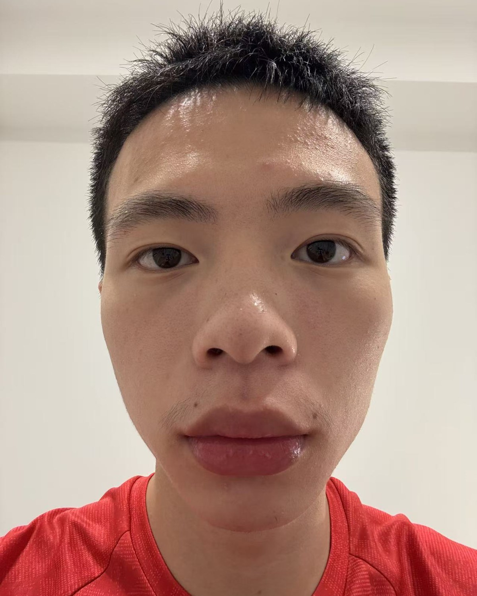
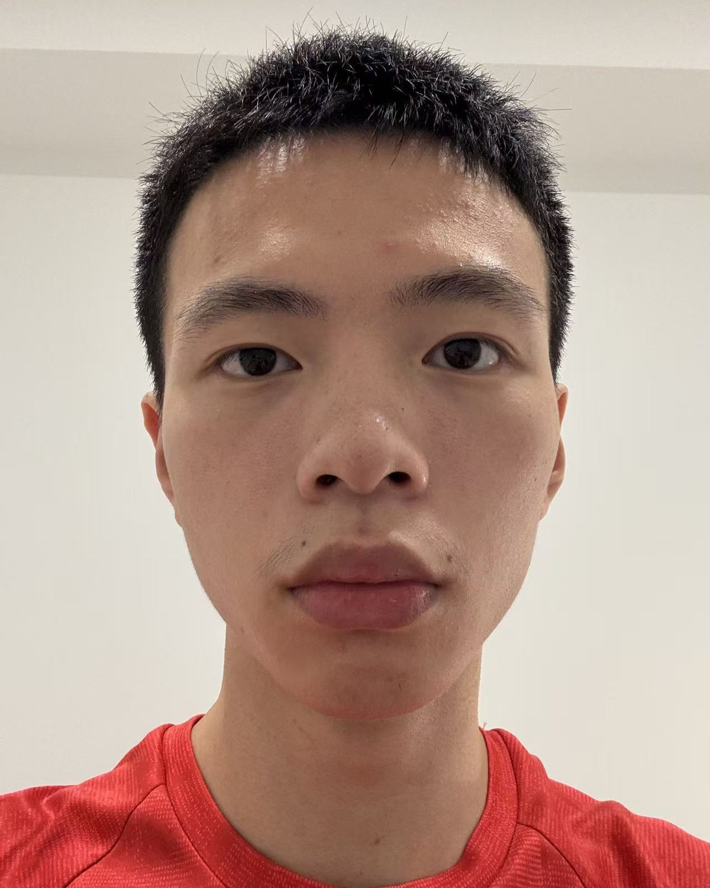
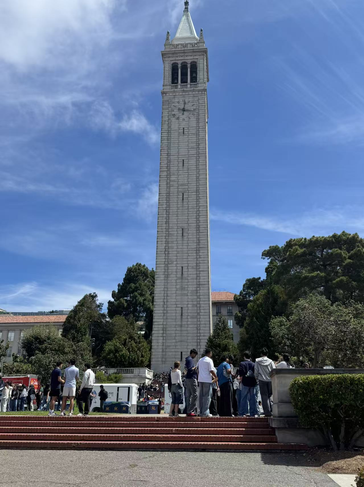
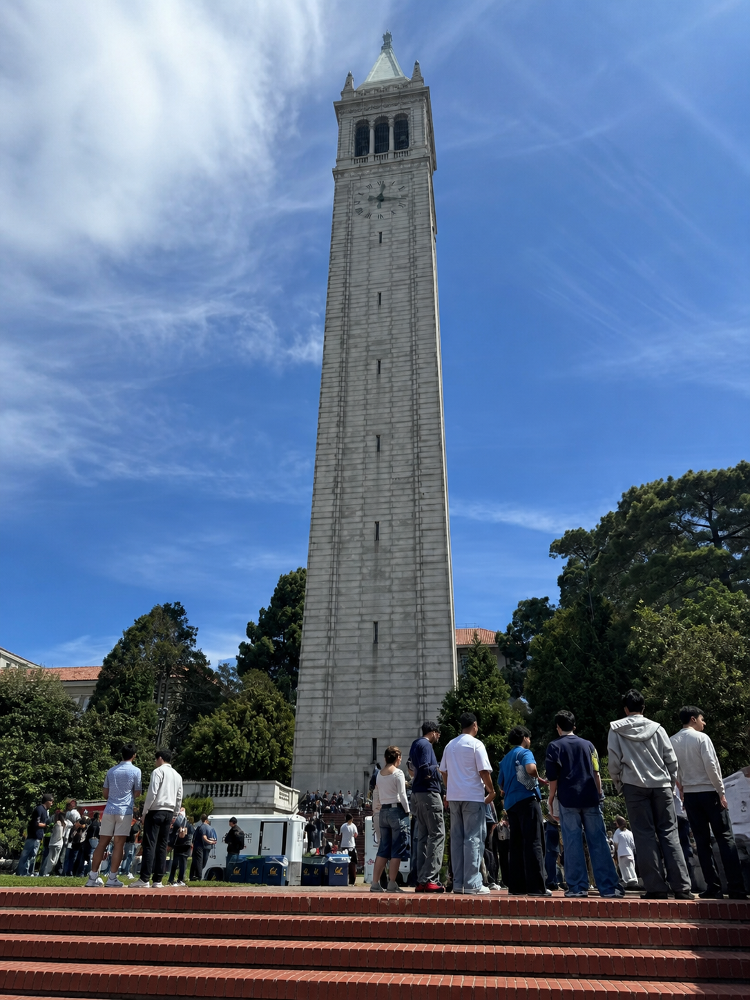
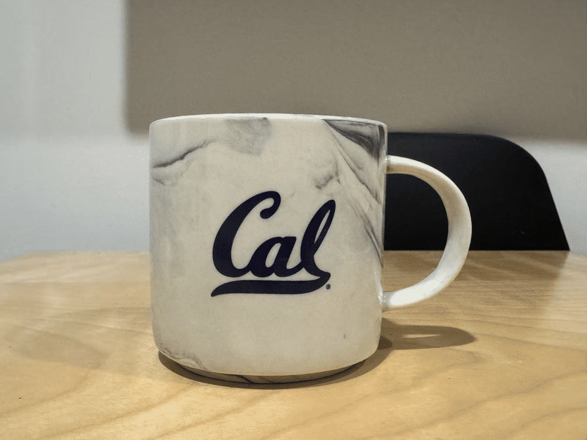

Perspective · Distance · Focal length
Becoming Friends
with Your Camera
Three small experiments in how camera position and zoom reshape the way we perceive depth.
Portrait experiment
Selfie: the wrong way vs. the right way


Observation
In the close-up image, facial features nearest to the camera appear disproportionately large. Stepping back reduces those relative distance differences; zoom then restores the framing without restoring the distortion.
Spatial experiment
Architectural perspective compression


Observation
From farther away, the foreground and background appear closer together and the scene feels flatter. Moving closer with a wider field of view exaggerates depth, scale differences, and converging lines.
Motion experiment
The Dolly Zoom

I moved the camera backward while zooming in, keeping the subject approximately the same size in every frame.
I used a ceramic Cal mug as my subject and captured six frames while moving the camera closer and zooming out to keep the mug approximately the same size. I aligned the frames on the mug and applied a consistent crop before assembling the looping GIF. The mug stays visually anchored while the background changes in scale and perspective, producing the characteristic Dolly Zoom effect.